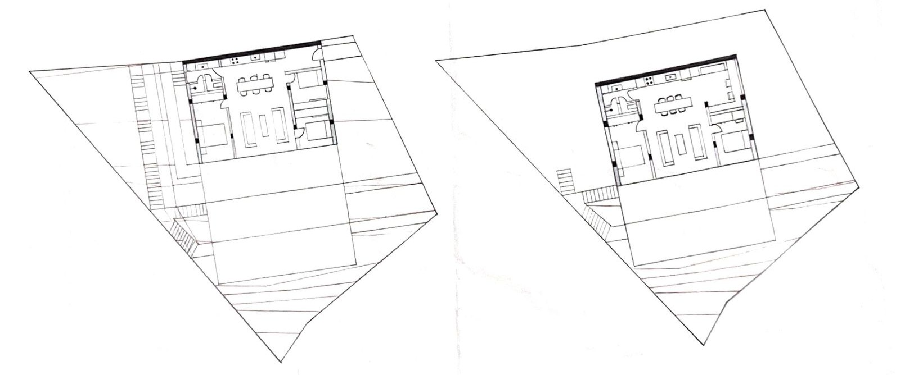
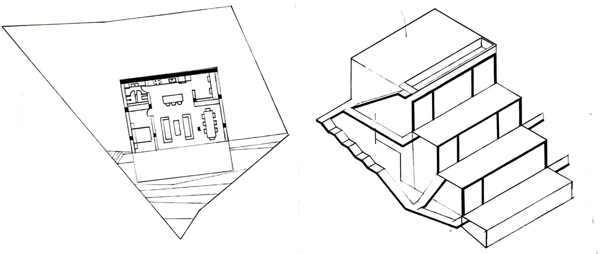

TRÊS CASAS

O projeto consistiu na elaboração de três residências unifamiliares térreas em um terreno com forte declividade, localizado no bairro da Saúde, na cidade do Rio de Janeiro. A área escolhida apresentava um desnível de aproximadamente 11 metros ao longo de sua extensão, o que impôs desafios significativos de implantação e estruturação. Com uma metragem máxima de 100m² por unidade, o objetivo era distribuir as casas de forma eficiente e integrada ao relevo, respeitando as condicionantes do solo e buscando soluções arquitetônicas claras e objetivas.
Para lidar com o desnível acentuado, optou-se por uma implantação em sequência vertical, em que cada residência ocupa um platô diferente do terreno. A estratégia principal foi utilizar a cobertura de cada casa como uma espécie de varanda/jardim para a casa imediatamente acima. Essa decisão permitiu não apenas o aproveitamento máximo do terreno, mas também a criação de áreas externas generosas e com vista, sem comprometer a privacidade entre as unidades. As casas são iguais entre si, o que reforça a racionalidade do projeto e facilita a execução em série.
 A organização espacial das residências foi pensada de forma a otimizar ao máximo os 100m² disponíveis. A planta foi desenhada sem corredores, o que garante um melhor aproveitamento da área interna e favorece a integração entre os ambientes. A circulação se dá de forma fluida e direta entre os espaços sociais e íntimos, promovendo praticidade no uso cotidiano. Apesar de compactas, as casas apresentam ambientes bem definidos e proporções confortáveis para uso residencial.
A construção foi proposta em alvenaria convencional, com sistema estrutural simples e viável para terrenos com topografia irregular. A escolha por essa técnica leva em consideração sua ampla aplicação e adaptabilidade ao contexto urbano carioca. Todos os desenhos do projeto foram desenvolvidos manualmente, explorando a representação gráfica como ferramenta de concepção e controle espacial. Essa abordagem contribuiu para uma leitura mais intuitiva da topografia e das relações entre os volumes edificados.
A repetição das unidades e o uso inteligente da cobertura como varanda permitiram um resultado coeso e funcional. A experiência de projetar em terreno com forte declividade trouxe aprendizados importantes sobre adaptação ao sítio, modulação construtiva e racionalização espacial.